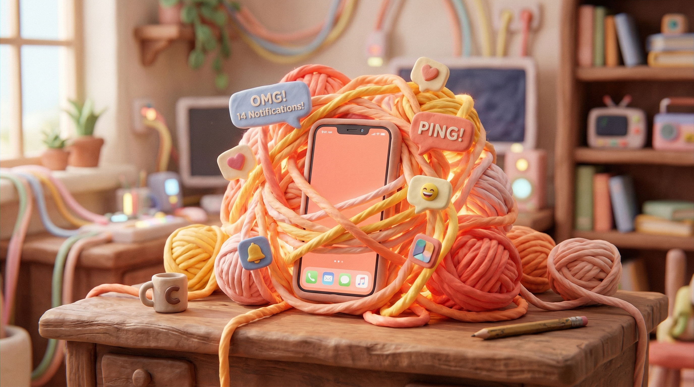

第一章 / 孤独的底色
“一代户”激增：社会人口学的重构
家庭模式的解体
探讨老年人对AI的渴求，必须溯源至其生存形态的根本变迁。右侧图表显示，“三口之家”不再是主流，“一代户”（如独居/仅老两口居住）逼近半数。
十年间，‘一代户’比重飙升了15.32%。庞大的数据背后，是无数个渴望回音的空房间。
“空巢化”的地域推手
这种孤独并非均匀分布。人口流出大省（如东北三省）与高生活成本的一线城市（如北上广），成为了独居老人的重镇。
人口结构变迁核心数据
第六次与第七次全国人口普查家庭户占比变化
各典型区域“一代户”占比 (横向对比)
第二章 / 隐秘的角落
心理危机与数字化生存图景
生命被延长了，但心理质量却面临考验。当现实中的交流匮乏时，银发群体正以前所未有的深度沉浸入数字世界。
看不见的流行病：孤独与抑郁
根据《2024老龄蓝皮书》，每四个中国老年人中，就有一人正在与抑郁情绪作斗争。
转机：数据表明，经常上网的老年人中，84.7%表示“从不感到孤独”。互联网成为抵御社会隔离的一面盾牌。

银发群体的数字沉浸 (2025年11月)
月活用户
3.51 亿人
月人均时长
135 小时
月人均次数
1345 次
高端终端
46.6 %
他们平均每天在屏幕上耗费超过4.5小时。短视频平台凭借简单的操作和算法喂养，构成了他们数字生活的绝对主阵地。
第三与第四章 / 疗愈的替身与深渊
解药还是新型电子鸦片？

爆发的“陪伴经济”
全球AI陪伴市场正以30.8%的复合增长率狂飙，中国潜在市场规模高达4200亿。
破解“赛博儿女”的话术矩阵
“这些话绕过了逻辑，直接作用于软肋。它们展现了现实中令人窒息的陪伴饥渴。”
极端病理切片：“假靳东”诈骗案
江西老太坚决要贷款200万给短视频里的“男友靳东”拍戏。警方劝阻时以死相逼。在上海同类案件中，8人团伙利用Deepfake批量制造互动视频。
第五章 / 科技向善
构建适老化的AI社会防卫机制
长期社会防卫工程
将AI素养（识别Deepfake）纳入老年教育，由社区构筑反诈第一道防线。
伦理熔断与数据护栏
开发“老年专属AI模型”。监测到转账意图时，底层强制触发熔断机制并预警家属。
强制数字水印与反制
平台强制给AI生成视频添加警示水印。利用对抗生成网络（GANs）实时阻断伪造账号。